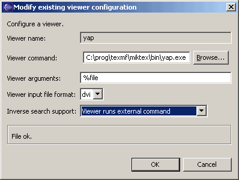
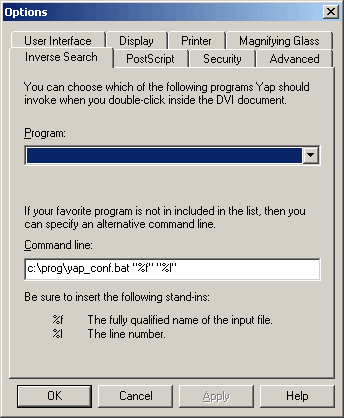
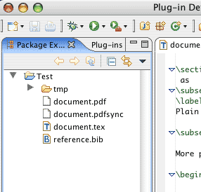

Building a LaTeX project is as easy as building any other project in Eclipse. In the menu there is a Project > Build Project -option. Also, the Build Automatically -option can be used.
The TeXlipse plugin provides some kind of default options for building, but these may have to be changed depending on the user's system. More info can be found in the configuration section.
Building LaTeX documents is possible not only in LaTeX projects but also in other types of projects. For example, a LaTeX file can be created inside a Java project and it will be built automatically every time the Java project is being built.
When writing big LaTeX documents it is sometimes handy to split the document into
multiple files. The file containing document preamble (\usepackage{...}-lines and
\begin{document}) is called the main file. Other LaTeX-files in the
project are usually included to the main file using \input{file} or
\include{file}. If the included files are small compared to the total
size of the LaTeX document, like chapters of a book, it would be handy to easily
build just the file that is currently edited.
Partial building does just this. In partial building mode, only the currently edited document is built. Partial building can be activated by choosing Latex > Partial Building from the menu. Alternatively, the Partial Building -toolbar button can be used to toggle partial building mode.
In practice, when in partial building mode, the document that is currently being
edited is built. The current document means the last LaTeX document that was open
in the editor. If the current document is not the main file and does not contain a
\begin{document} -tag it is not a proper LaTeX document
on it's own. That is why a temporary LaTeX file is constructed by prepending the
preamble-section from the main file to the current file and appending the
bibliography-section to the end. This temporary document is saved to a file called
'tempPartial0000.tex', and then built. The project output file is overwritten
with the output of the partial build. This enables an easy switching between
partial and "full" building mode while the viewer application is running.
If the current document is a self-contained LaTeX document (it contains a
\begin{document}) it will be build correctly on save even if it is
not the main document. No temporary document will be created in this case.
You can disable partial build for a file by adding the special comment %##noBuild.
In this manual previewing a Latex project means launching an external viewer application to view the output file of a Latex project.
The preview can be activated either from the Preview -button in the toolbar, or from the menu: Latex > Preview Document.
Almost any application capable of displaying output files (dvi, ps or pdf) can be used as a viewer. Configuring a viewer is done via the Texlipse > Viewer Settings -preference page. Read more about it in the configuration section.
The Viewer Settings -preference page lists the available viewers, and you can add more or edit the default configuration for each viewer. Read more about setting up a viewer program in the configuration section.
A preview is launched by pressing the preview-button in the menubar (), or by pressing the preview hotkey (usually Ctrl+4).
The previewer always tries to open the output file of the current project. Because Eclipse can have multiple projects open at the same time, the previewer determines the current project by checking to which project the currently edited file belongs. So, if no files are open, no previewer will be launched. Also, if the project's output file has been deleted after the last build, or is not yet created, the viewer obviously can't view anything.
When launching a preview from the editor, Texlipse first checks the viewer settings to see which viewer is the preferred viewer for the current output format (pdf, dvi, gs). It then looks trough the list of recent launches, and tries to find a launch config matching the preferred viewer. If no launch config is found, a new one is created based on the viewer defaults in the viewer settings, and the new config is run. The next time a document is previewed with the same viewer the config is reused.
Linking source to output means that the viewer is launched viewing the position of output file which corresponds to the position of source files where cursor is currently at. This is commonly referred as forward search. Editors supporting forward search include at least Xdvi in Linux and Yap in Windows.
Configuring forward search happens usually by adding "%line
%texfile" to somewhere in the viewer arguments. For example,
this is what the Yap viewer has as its default arguments:
-1 -s "%line %texfile" %file. When the viewer
is launched, %line is replaced with the line number where
the cursor is, %texfile is replaced with the name of the
file that is currently being edited and %file is replaced
with the project output file name.
On Windows it is also possible to use DDE messages to
let the viewer know where to open the document. In Acrobat Professional
this can be done by adding [MenuitemExecute("GoBack")] to the
end of the DDE Open message. See viewer configuration
for more about DDE.
Linking preview to source means that one can open the document source file from
the correct position just by clicking a line of text in the output file.
This is also called inverse search.
Inverse search is usually achieved by the latex program inserting
some special guiding points to the output file, so that the viewer program can
read them. This requires a fairly recent version of LaTeX, which supports the
--src-specials -parameter. At least LaTeX version 7.4.5 seems
to support it.
A special viewer that can handle the guiding points is required.
On most Unix and MS Windows systems there is a DVI file viewer available,
which supports inverse search. For Unix systems, there is xdvi
(and some others), and yapon MS Windows systems.
TeXlipse supports two ways of linking preview to source. One is by reading standard output and one is by reading a socket.
The xdvi program is configured by default to use the standard
output way. So, if your system has a version of xdvi installed that
supports the -editor parameter, chances are that linking preview
to source is easy to configure on your system. Just choose xdvi as
the default viewer program by moving to the top of the viewer list. Then check
that the path is correct and you are ready to go. If your version of xdvi
doesn't support -editor -parameter, then there is no way of getting
the inverse search to work.
The yap viewer is by default configured to use the socket way.
This is a bit more difficult to set up than using the standard output way (which doesn't
actually need any setting up).
yap configuration:
(Window > Preferences > Texlipse > Viewer Settings)
Viewer runs external command

java -classpath %ECLIPSEDIR%\plugins\texlipse\texlipse.jar net.sourceforge.texlipse.viewer.util.FileLocationClient -p 55000 -f %1 -l %2where
%ECLIPSEDIR% is the directory in which Eclipse is installed,
texlipse is the directory of TeXlipse under the plugins
ditectory (where TeXlipse is installed), -p 55000 is the port that TeXlipse is listening
(must be the same than it is in the Viewer Settings Preferences page) and
-f %1 -l %2 are file and line parameters for TeXlipse.
Notice that if the directory names contain white spaces, you need to surround
the directory name with "-marks.
The external editor command in the above example launches a part of the TeXlipse
plugin as a client program that outputs a line of text to the given port in the
following format: [filename]:[linenumber]. This line is then read
by another part of the TeXlipse plugin functioning as a server. The server then
opens the specified file from the specified place in the Eclipse window.
Exception in thread "main" java.lang.NoClassDefFoundError
The class path is incorrect, check the path. In this example it is
plugin when it should be plugins
Couldn't get I/O for the connection to: localhost
Probably the firewall is blocking the connection, check the settings.

No error, but nothing happens. Check that the port is correct both in the bat-file and on the Viewer Settings page.
Mac OS X has very good PDF viewing support, so many users want to take advantage of it. Below is described one way of achieving "PDF to Latex-source-on-Eclipse" -linking. Hopefully there is another way, because this is not so easy to configure.
pdflatex
(Project_name > Properties > Latex Project Properties )
\usepackage
{pdfsync} in to the preamble section of your Latex document.
(Also make sure that you have the pdfsync package installed. More info on
the iTeXMac homepage.)
~/Library/Application Support/iTexMac/bin/ -directory
(where '~' is your home directory).
To this file write the following line:
java -classpath $ECLIPSEDIR/plugins/texlipse/texlipse.jar net.sourceforge.texlipse.viewer.util.FileLocationClient -f ${file} -l ${line}
where $ECLIPSEDIR is the directory where Eclipse is installed.
